🎬 Video Eğitimi
🔧 Kurulum ve İzinler
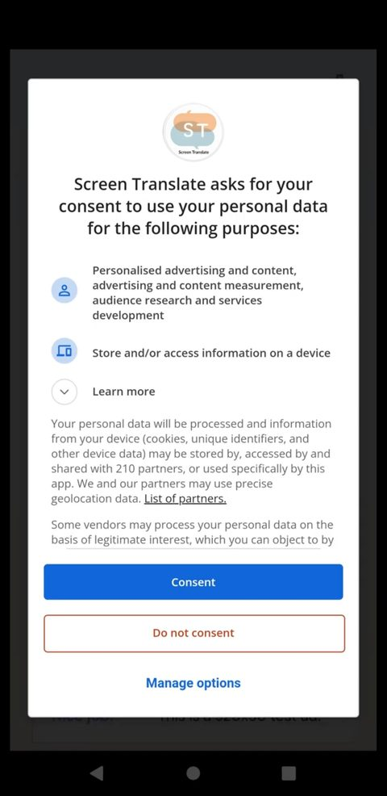
Reklam ve veri izni
Uygulama ilk açılışta reklam görüntüleme izni ister; tercihinize göre verebilirsiniz.
Not: Bu izin yalnızca yasal yükümlülüğün olduğu bölge ve ülkelerde geçerlidir.
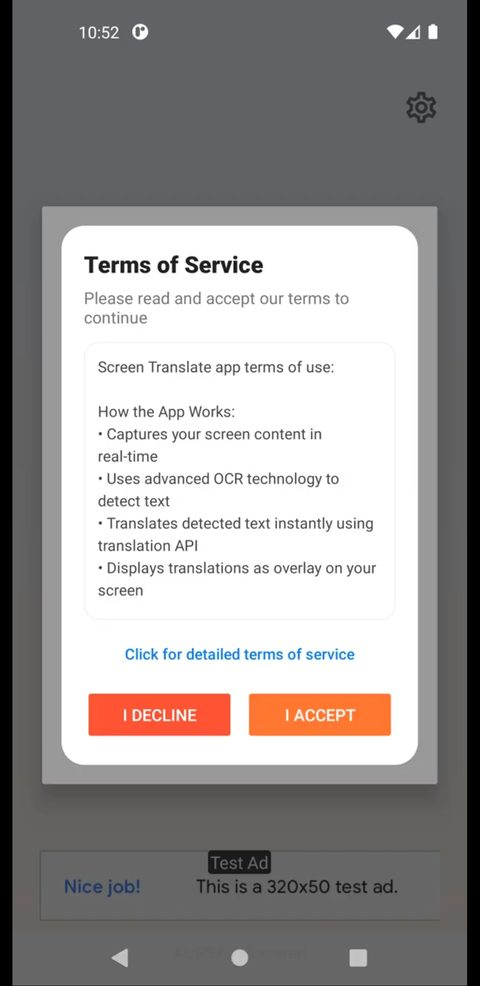
Hizmet koşullarını kabul edin
Hizmet koşullarımızı okuyup kabul edin.
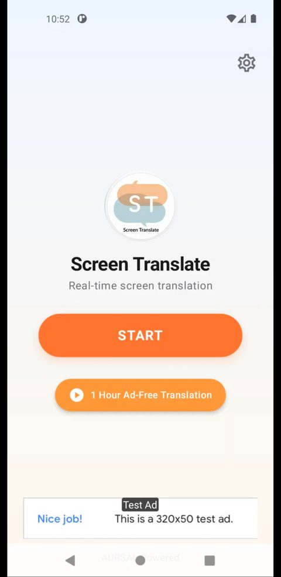
Başlat'a dokunun
START butonuna dokunarak kuruluma başlayın.
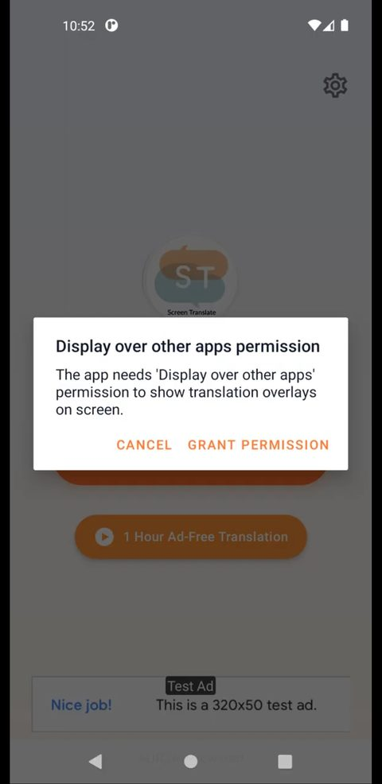
Üstte gösterim izni
Screen Translate'in diğer uygulamaların üzerinde çalışabilmesi için gerekli izni verin. Bu izin, çevirilerin ekrana canlı yansıması için gereklidir.
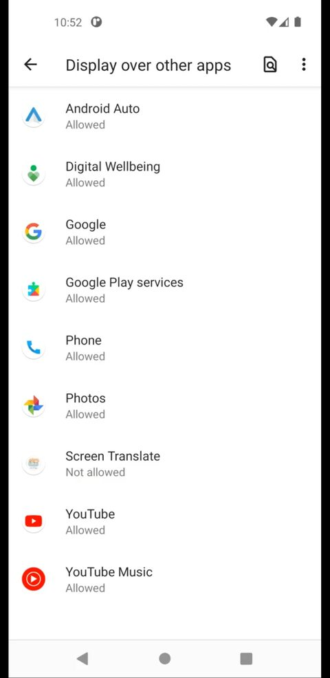
Uygulamayı bulun
Açılan ayarlar sayfasında Screen Translate'i bulup dokunun.
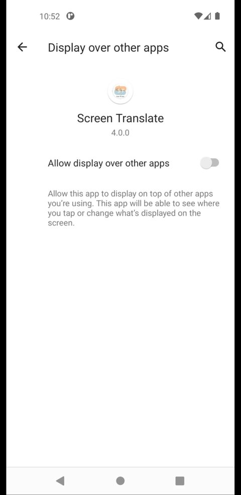
İzni açın
Butonu açık duruma getirerek onay verin.
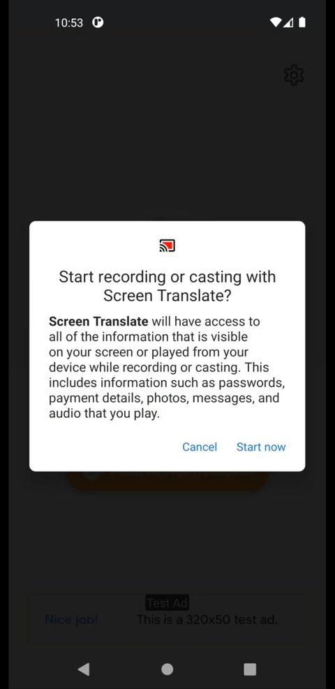
Ekran kaydı izni
Buradan Başlat diyerek ekran kaydına izin verin.
🚀 İlk Kullanım ve Ayarlar
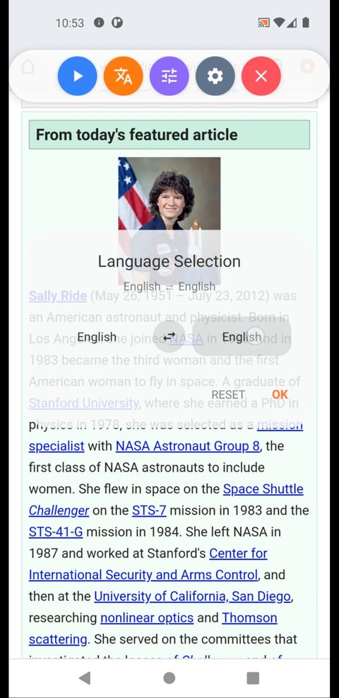
Dil seçimi
Karşınıza çıkan overlay panelden dil seçimi butonuna dokunun. Ardından kaynak ve hedef dilinizi seçip Tamam'a dokunun.
Not: Dil seçimi yapılmazsa ekrana çeviri gelmez.
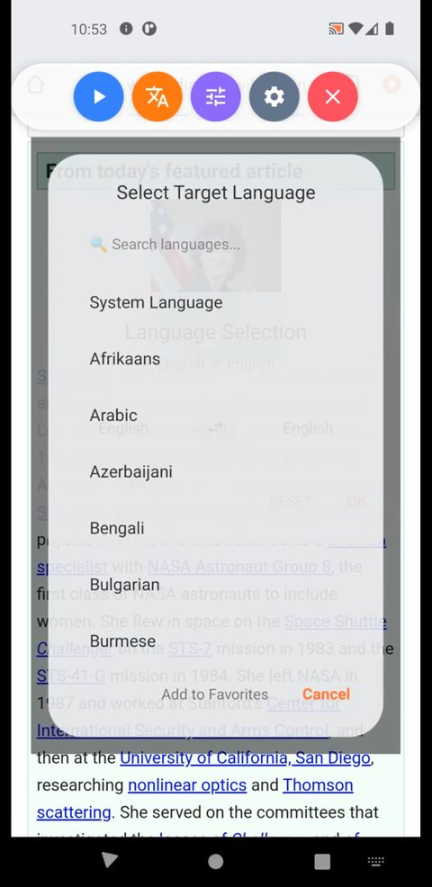
Dilde arama
Dil seçimi ekranında arama da yapabilirsiniz.
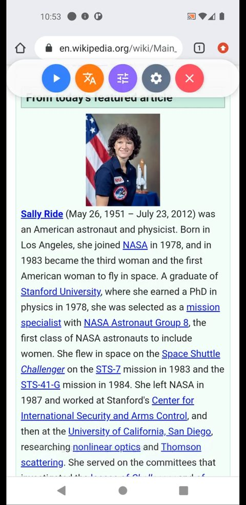
Çeviriyi başlatın
Play butonuyla çeviriyi başlatabilir, ya da ayarlar sayfasına giderek bazı ayarları düzenleyebilirsiniz.
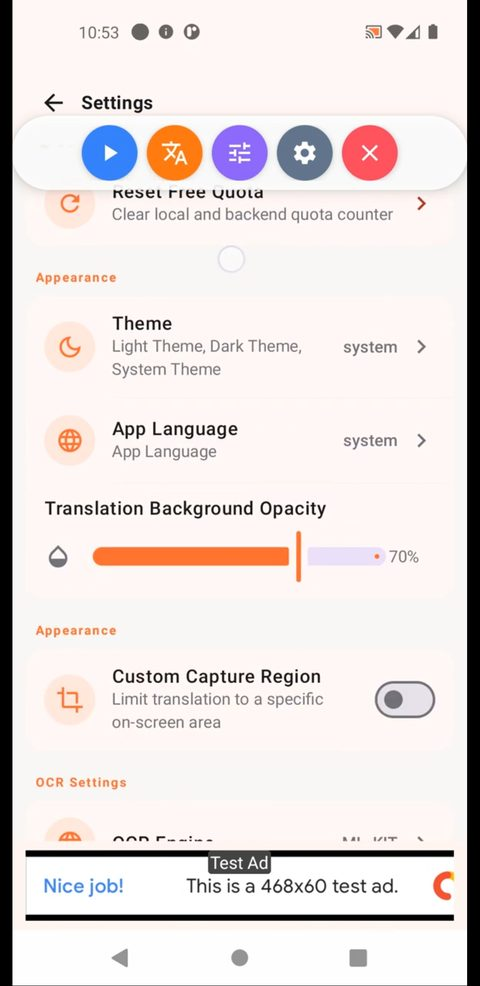
Arka plan şeffaflığı
Arka plan şeffaflığını %100 yaparak arka plandaki yazıları kapatabilirsiniz.
Not: Yeni Android sürümlerinde (API 33 ve sonrası) bu ayarı %100 yapsanız bile arka plandaki orijinal yazılar tamamen kapanmaz. Bu, Android ekosisteminin bir zorunluluğudur.
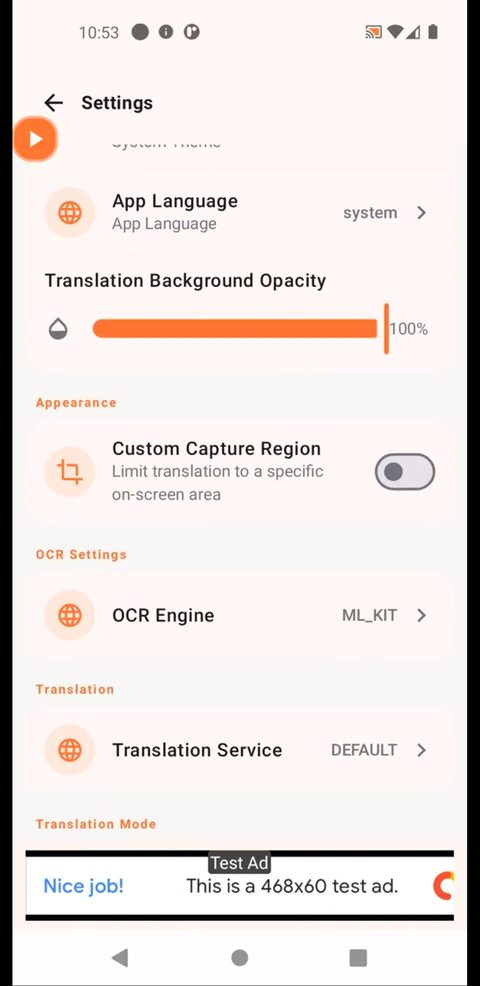
OCR ve çeviri motoru
Bu bölümden ekrandan metin çıkarma motorunu (OCR) ve çeviri servisini seçebilirsiniz.
- ML Kit ürünleri ücretsizdir.
- ML Kit OCR'ı en sağlıklı sonuç için yalnızca Latin alfabesinde öneririz.
- ML Kit çeviri için dil paketleri gerekir. Paketler otomatik iner; sorun olursa Ayarlar → Çevrimdışı Diller'den manuel de indirebilirsiniz.
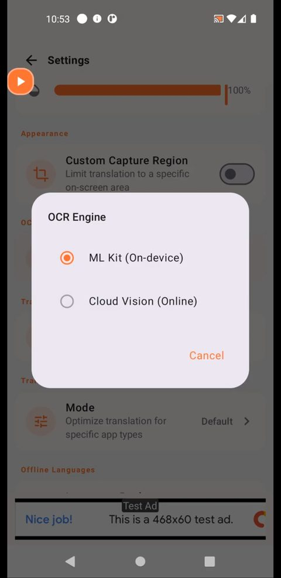
ML Kit OCR — tamamen cihazda
ML Kit OCR tamamen cihazınızda çalışır. İnternet üzerinden çeviri servislerine hiçbir şey gönderilmez.
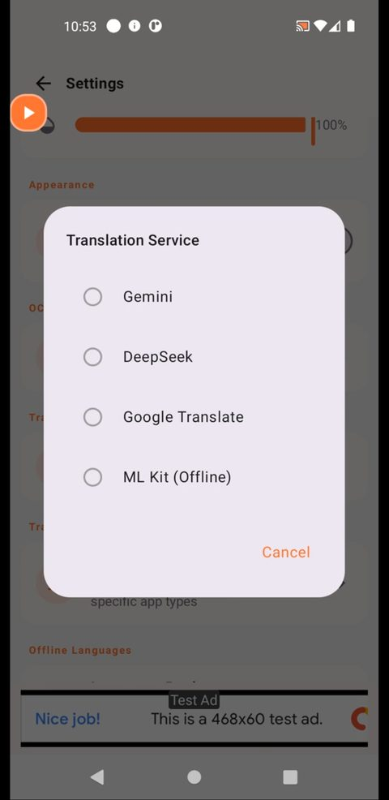
ML Kit çeviri — tamamen cihazda
ML Kit çeviri de tamamen cihazınızda çalışır; verileriniz cihazdan çıkmaz.
💡 Kullanım ve Püf Noktaları
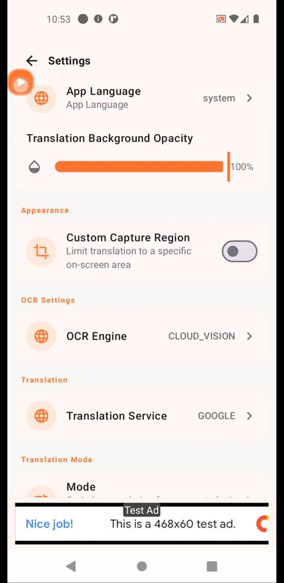
Küçük panel (play / pause)
Küçülmüş overlay paneli yalnızca play/pause moduna geçer. Çift dokunarak paneli yeniden genişletebilir, tek dokunuşla çeviriyi başlatıp durdurabilirsiniz.
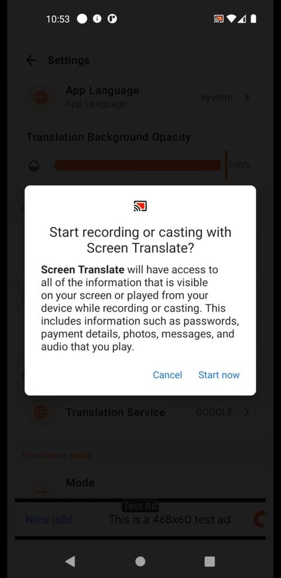
Yeniden başlatma
Play'e tek dokunduktan sonra sizden yeniden ekran kaydı izni istenir. İzni vererek çeviriyi başlatabilirsiniz.
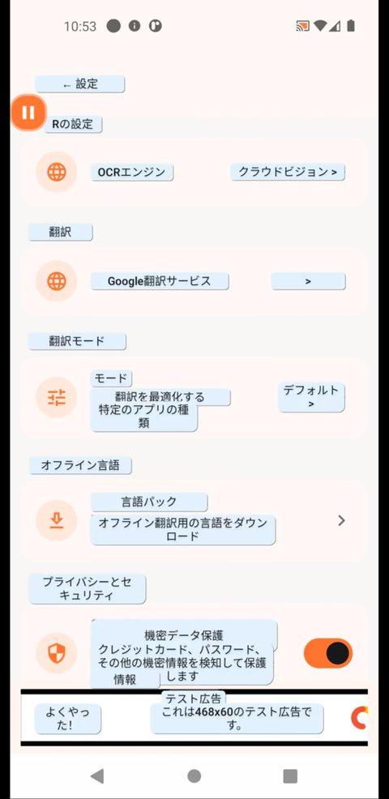
Kullanıma devam edin
İlk çeviriler geldikten sonra hiçbir şey yapmadan telefonunuzu kullanmaya devam edebilirsiniz. Dokunmalarınızla çeviriler silinir ve yeni ekran çevirisi gelir.
Bazen yeni çeviriler orijinal metni kapatmayabilir ya da yanlış konumlanabilir; ekranda boş bir noktaya dokunarak çevirilerin doğru yerleşmesini sağlayabilirsiniz.
🎛️ Modlar
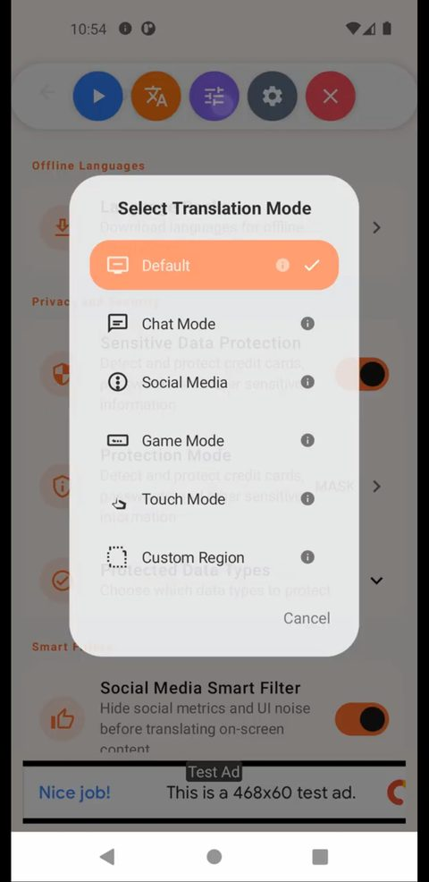
Mod seçimi
Bu butonla bir mod seçebilirsiniz. Her modun kendine özgü özellikleri vardır:
Ekranda gördüğü her metni çevirir.
Özel bir erişilebilirlik izniyle sohbet uygulamalarında (WhatsApp, Instagram, Facebook gibi) metinleri anlık çevirir. Yalnızca sohbet metinlerini takip eder, ekran izni istemez.
Sosyal medyada yalnızca ana içerikleri çevirmek için hashtag, yorum, beğeni gibi metinleri filtreler.
Ekranda gecikme ve takılmaları önlemek için minimal düzeyde çalışacak şekilde tasarlandı.
Ekrandaki bir kelimeye dokunarak yalnızca o kelimeyi, ya da bir cümleyi çizerek yalnızca o cümleyi çevirir. Not: Bu modda sayfayı kaydırmak için boş alana iki kez dokunun; ikinci dokunuşla birlikte kaydırabilirsiniz.
Yalnızca belirlediğiniz alanda çeviri yapar. Alanı köşelerinden çekerek istediğiniz gibi boyutlandırabilirsiniz.